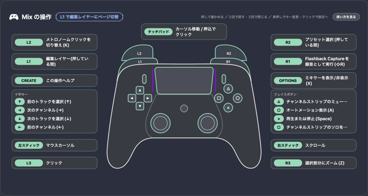

DaruGoro
ゲーム感覚でDAWをいじれるMacアプリ
A Mac app that lets you tinker with your DAW like a game
ソファでゴロゴロしながら、PS5コントローラーでDAWを操作するMacアプリ。
Control your DAW from the sofa — with a PS5 DualSense controller.
Download for Mac無料 · macOS 12 以降
Free · macOS 12 or later

DaruGoro（だるごろ）は、デスクに向き合いすぎず、だるっとゴロゴロくつろぎながら、DualSense(PS5)コントローラでDAW操作を行うことをコンセプトとしたmacOSアプリです。
DaruGoroではボタン割り当てができ、DualSenseコントローラをUSB-CまたはBluetoothで接続後、マウスやキーボード代わりとしてお使いいただけます。
- 楽器を構えたまま、デスクに戻らず録音したい方
- コントローラを拡張デバイスとして使いたい方
- キーボード自体に嫌気が差した方
アプリごとにプリセットを用意できます。自分の好きなボタン配置を選べ、設定ファイルのインポート/エクスポートもできます。
十字キー(ゲームパッドの十字と同じ動作)・スクロール・マウスカーソル・矢印キーを選べます。
DualSenseのタッチパッドで、マウス移動・タップクリック・ドラッグ・Forceクリックができます。
プリセット切替ボタン(デフォルト:R2)でプリセット一覧が円形のメニューで表示されスティック操作でプリセットを簡単に切り替えられます。
レイヤー切り替えボタン(デフォルト:L1)を押している間のボタン割り当てできるため、割り当てを拡張できます。
ヘルプボタン(デフォルト:CREATE)で全ての割り当てをコントローラーの絵の周りに表示します。



- macOS 12 Monterey 以降
- PS5 DualSense ワイヤレスコントローラー（Bluetooth または USB）
- Logic Pro または Studio One（その他のアプリは「デフォルト」のプリセットで動きます）
Developer ID で署名し、Apple の公証を受けています。
更新内容と過去の版は GitHub Releases にあります。
brew install --cask amam335345/darugoro/darugoroターミナルに貼って実行します。新しい版にするときは brew upgrade --cask darugoro です。
コントローラーをつなぐ。PS ボタンと CREATE ボタンを同時に長押しし、ライトバーが点滅したら、システム設定 › Bluetooth で「DualSense Wireless Controller」に接続します。USB ケーブルでもつなげます。
DaruGoro を開き、たずねられたらアクセシビリティを許可します。システム設定 › プライバシーとセキュリティ › アクセシビリティ で DaruGoro をオンにします。DAW にキーを送るために必要です。
DAW を前面にする。DaruGoro のウインドウの上に、DAW の名前とプリセットが出れば準備完了です。
ボタンを押す。割り当てたショートカットが DAW に送られます。CREATE ボタンで、いつでも割り当てを確かめられます。
DaruGoro.app をゴミ箱に入れるだけなら、プリセットや設定は Mac に残ります。入れ直すと、そのまま戻ります。すべて消したいときは、次のようにします。
「データを消して終了…」を選ぶ。アプリのメニュー（DaruGoro の「DaruGoroを終了」の上）か、メニューバーの DaruGoro のアイコンのメニューにあります。
「消して終了」を押す。プリセット・設定・アクセシビリティの許可を消して、DaruGoro が終了します。
DaruGoro.app をゴミ箱に入れ、ゴミ箱を空にします。
システム設定 › プライバシーとセキュリティ › アクセシビリティ に DaruGoro が残っていたら、選んで「−」を押して外します。
Homebrew で入れたときは、ターミナルで brew uninstall --zap --cask darugoro を実行すると、アプリとプリセット・設定をまとめて消せます。アクセシビリティの一覧は、上と同じように手で外します。
アプリを先に消してしまったときは、残ったものを手で消せます。
残ったデータを消す。Finder の 移動 › フォルダへ移動…（Shift + Command + G）で次の場所を開き、ゴミ箱に入れます（無いものは飛ばします）。
~/Library/Application Support/DaruGoro（プリセット・共通設定・読み込んだキーコマンド一覧）~/Library/Preferences/com.amamamam.DaruGoro.plist（アプリの設定）~/Library/Saved Application State/com.amamamam.DaruGoro.savedState（ウインドウの状態）~/Library/Caches/com.amamamam.DaruGoro（キャッシュ）
アクセシビリティの許可を外す。システム設定 › プライバシーとセキュリティ › アクセシビリティ で DaruGoro を選び、「−」を押します。
ゴミ箱を空にします。
DaruGoro は、ログイン項目・常駐するもの・ドライバを入れていないので、ほかには何も残りません。
DaruGoroは無料です。もし役に立ったら、Ko-fi でお礼を送っていただけると嬉しいです。これからの開発の励みになります。送らなくても、すべての機能を使えます。返信や返礼はありません。
商標について。DualSense、PlayStation および PS5 は Sony Interactive Entertainment Inc. の、Logic Pro は Apple Inc. の、Studio One は PreSonus Audio Electronics, Inc. の商標または登録商標です。DaruGoro はこれらの企業と提携しておらず、承認も受けていません。
DaruGoro is a macOS app built around one idea: without staying glued to your desk, lounge around lazily while you run your DAW with a DualSense (PS5) controller.
You can assign actions to the buttons. Connect a DualSense controller over USB-C or Bluetooth, and use it in place of your mouse and keyboard.
- Anyone who wants to record with an instrument in hand, without going back to the desk
- Anyone who wants to use a controller as an extra input device
- Anyone who has simply had enough of the keyboard
Keep presets for each app. Pick the button layout you like, and import or export your settings file.
Choose D-pad (works like a gamepad's D-pad), scroll, mouse cursor or arrow keys.
Move the mouse, tap to click, drag and Force Click with the DualSense touchpad.
Press the preset button (default: R2) to show your presets in a circular menu, and switch between them easily with the stick.
While the layer button (default: L1) is held, the buttons use a second set of assignments, so you can assign more actions.
Press the help button (default: CREATE) to see every assignment drawn around the controller.
- macOS 12 Monterey or later
- A PS5 DualSense wireless controller (Bluetooth or USB)
- Logic Pro or Studio One (other apps work with the “Default” preset)
The app is signed with a Developer ID and notarized by Apple.
Release notes and older versions are on GitHub Releases.
brew install --cask amam335345/darugoro/darugoroPaste it into Terminal and run it. To update, run brew upgrade --cask darugoro.
Connect the controller. Hold the PS button and the CREATE button together until the light bar flashes, then connect “DualSense Wireless Controller” in System Settings › Bluetooth. A USB cable also works.
Open DaruGoro and allow Accessibility access when asked: System Settings › Privacy & Security › Accessibility, then turn on DaruGoro. This is needed to send keys to your DAW.
Bring your DAW to the front. When the top of the DaruGoro window shows your DAW and a preset, you are ready.
Press a button. The assigned shortcut is sent to the DAW. Press CREATE any time to see what each button does.
If you only move DaruGoro.app to the Trash, your presets and settings stay on your Mac, and they come back when you install it again. To remove everything:
Choose “データを消して終了…” (Erase Data and Quit). It is in the DaruGoro menu, just above “DaruGoroを終了” (Quit DaruGoro), and in the menu of the DaruGoro icon in the menu bar. The menus are in Japanese for now.
Click “消して終了” (Erase and Quit). DaruGoro removes your presets, settings and its Accessibility permission, then quits.
Move DaruGoro.app to the Trash and empty the Trash.
If DaruGoro is still listed in System Settings › Privacy & Security › Accessibility, select it and click “−”.
If you installed with Homebrew, run brew uninstall --zap --cask darugoro in Terminal to remove the app together with your presets and settings. Remove it from the Accessibility list by hand, as above.
If you already deleted the app, you can remove the leftovers by hand:
Remove the saved data. In Finder, choose Go › Go to Folder… (Shift-Command-G), open each of these, and move them to the Trash (skip any that do not exist):
~/Library/Application Support/DaruGoro(presets, common settings and imported key command lists)~/Library/Preferences/com.amamamam.DaruGoro.plist(app settings)~/Library/Saved Application State/com.amamamam.DaruGoro.savedState(window state)~/Library/Caches/com.amamamam.DaruGoro(cache)
Remove Accessibility access. In System Settings › Privacy & Security › Accessibility, select DaruGoro and click “−”.
Empty the Trash.
DaruGoro does not install login items, background helpers or drivers, so nothing else is left behind.
DaruGoro is free. If it helps you, I'd be glad if you sent a thank-you on Ko-fi. It would encourage me to keep developing the app. Every feature works even if you don't. There are no replies or rewards.
Trademarks. DualSense, PlayStation and PS5 are trademarks or registered trademarks of Sony Interactive Entertainment Inc., Logic Pro is a trademark or registered trademark of Apple Inc., and Studio One is a trademark or registered trademark of PreSonus Audio Electronics, Inc. DaruGoro is not affiliated with, nor endorsed by, these companies.